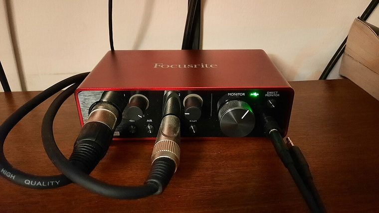

[ INDIVIDUAL COMPONENT // SOUND HARDWARE ]
Focusrite Scarlett Solo (3rd Gen)
The third-generation Solo is a 2-in/2-out USB interface arranged as one microphone path plus a separate instrument path. This record does not describe the 4th-generation Solo currently shown on Focusrite’s main product page.

Specifications
| Product ID | Focusrite Scarlett Solo, 3rd Generation; identify generation from case/label and serial/model documentation. |
|---|---|
| Bus | USB 2.0 device connection with USB-C receptacle; powered from host. |
| Connectors / I/O | One XLR microphone input with 48 V phantom power, one 1/4-inch instrument/line input, two balanced 1/4-inch TRS line outputs, stereo headphone output. |
| Conversion | 24-bit, up to 192 kHz; two input and two output channels. Input signal layout differs from a pair of combo-input interfaces. |
| Drivers / OS | Focusrite Control/USB driver and OS support are release-specific. Use the archived 3rd Gen guide/support page; do not infer 3rd Gen driver support from the current 4th Gen product page. |
| Variant compatibility | 3rd Gen has one XLR mic and one separate front-panel instrument input; 4th Gen appearance/specifications differ. USB-C connector shape does not mean USB-C-only host capability. |
Service & preservation
Keep the original USB cable and the 3rd Gen user guide with the serial/model record. Test the instrument input and mic preamp separately; check phantom power, monitor switch, headphone jack, and balanced outputs. Archive the actual driver package before upgrading a stable host.
Primary sources
- Focusrite — Scarlett Solo 3rd Gen product pageManufacturer page for the exact product generation and feature identification.
- Focusrite — Scarlett Solo 3rd Gen support/downloadsOfficial documentation and driver/software availability with OS-specific release notes.